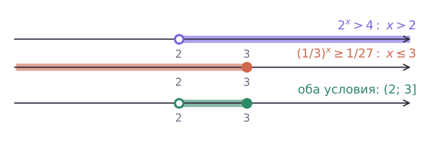

Теория
Система — это несколько уравнений (или неравенств), которые должны выполняться одновременно. Решение системы с двумя неизвестными — это пара чисел (x; y), которая обращает в верное равенство каждое уравнение. Например, пара (3; 2) — решение системы { x + y = 5; x − y = 1 }, а пара (2; 3) — нет: 2 − 3 ≠ 1. Порядок чисел в паре важен.
В показательной системе неизвестные стоят в показателях. Новых идей почти нет: каждое уравнение решаем приёмами урока 12, а получившуюся обычную систему — подстановкой или сложением, как в 7–9 классах.
Способ 1. Каждое уравнение — к одному основанию
Реши систему { 2x + y = 32; 3x − y = 3 }.
32 = 2⁵, 3 = 3¹. По свойству из урока 12 (одно основание — равные показатели): x + y = 5, x − y = 1.
Складываем: 2x = 6, x = 3, тогда y = 2. Проверка: 2⁵ = 32 ✓, 3¹ = 3 ✓. Ответ: (3; 2).
Если в одном уравнении стоит произведение или частное степеней с одним основанием, сначала собираем их в одну степень: ax·ay = ax + y, ax : ay = ax − y.
Способ 2. Подстановка из линейного уравнения
Реши систему { x + y = 3; 2x + 2y = 6 }.
Из первого y = 3 − x, тогда 2y = 23 − x = 8/2x. Получаем 2x + 8/2x = 6.
Пусть t = 2x > 0: t + 8/t = 6, t² − 6t + 8 = 0, t = 2 или t = 4. Значит, x = 1 или x = 2, и y = 2 или y = 1 соответственно.
Ответ: (1; 2), (2; 1).
Ответ системы — пары, а не отдельные числа. Запись «x = 1; 2, y = 2; 1» неверна: из неё непонятно, что пара (1; 1) не подходит. Каждое найденное x сразу подставляй и находи своё y.
Способ 3. Новые переменные
Если в обоих уравнениях повторяются одни и те же степени, например 2x и 3y, обозначаем u = 2x, v = 3y. Получается обычная алгебраическая система. Не забываем: u > 0, v > 0.
Реши систему { 2x + 3y = 7; 4x − 9y = 7 }.
u = 2x, v = 3y; 4x = u², 9y = v². Система: u + v = 7, u² − v² = 7.
Разность квадратов: (u − v)(u + v) = 7, значит, u − v = 1. Отсюда u = 4, v = 3 — оба положительны.
2x = 4 ⇒ x = 2; 3y = 3 ⇒ y = 1. Ответ: (2; 1).
Если после замены получилось, например, u = −2, это значение отбрасываем: 2x = −2 не имеет решений. Так в учебнике (задача 2) из двух решений вспомогательной системы остаётся одно.
Способ 4. Перемножить или разделить уравнения
Когда в уравнениях стоят произведения степеней с разными основаниями, помогает перемножить или разделить уравнения почленно. Это законно: правые части не равны нулю, и мы умножаем верное равенство на верное.
Реши систему { 2x·3y = 12; 2y·3x = 18 }.
Перемножим: 2x + y·3x + y = 216, то есть 6x + y = 6³, x + y = 3.
Разделим первое на второе: 2x − y·3y − x = 12/18, то есть (2/3)x − y = 2/3, x − y = 1.
x = 2, y = 1. Проверка: 4·3 = 12 ✓, 2·9 = 18 ✓. Ответ: (2; 1).
Системы с неравенствами
Если в систему входят неравенства, решаем каждое отдельно (урок 13) и берём общую часть — пересечение решений. Если там есть и уравнение, находим его корни и оставляем те, что удовлетворяют неравенству.
Реши систему { 2x > 4; (1/3)x ≥ 1/27 }.
Первое: 2 > 1, x > 2. Второе: 1/27 = (1/3)³, основание меньше 1 — знак меняем: x ≤ 3.
Общая часть: 2 < x ≤ 3. Ответ: (2; 3].

Реши систему { 2x < 8; 5x² − 2x = 125 }.
Неравенство: x < 3. Уравнение: x² − 2x = 3, x = 3 или x = −1.
x = 3 неравенству не удовлетворяет (3 < 3 неверно). Ответ: x = −1.
Задачи урока
Реши в тетради. Ответы разберём на занятии.
Из учебника
- № 240 — Линейное уравнение и показательное: подстановка.
- № 241 — Каждое уравнение — к одному основанию.
- № 242 — Новые переменные u = ax, v = by.
- № 243 — Новые переменные, вынесение за скобки, разные основания.
- № 244, 245 — Системы с неравенствами.
Тест к уроку
Домашнее задание
№ 240 (1–3), 241, 242 из учебника письменно; № 244 (1) — по желанию. Ответ к каждой системе записать парами (x; y) и сделать проверку хотя бы одной пары.